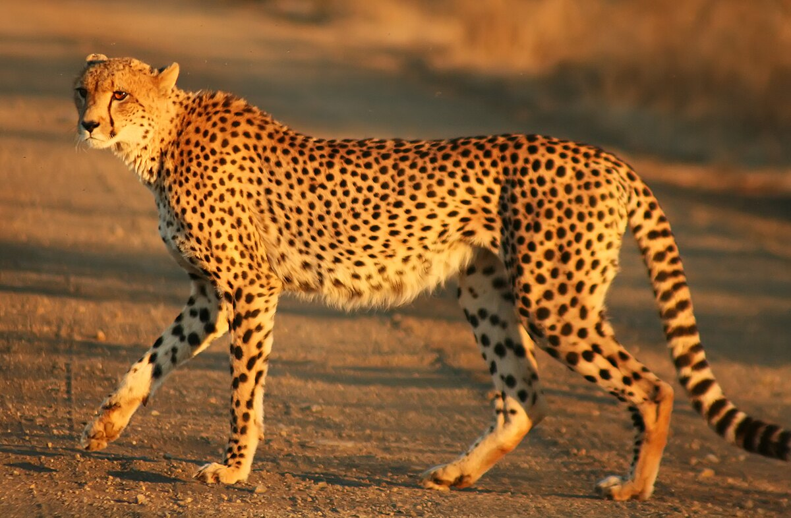
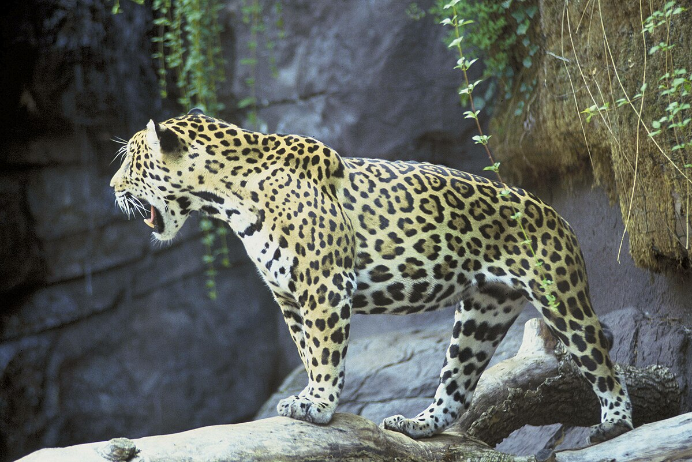

Гепард
Гепа́рд струнки́й (Acinonyx jubatus) — єдиний сучасний вид роду гепард (Acinonyx) із родини котових (Felinae). Згідно з генетичними дослідженнями, найближчим сучасним родичем гепарда є пума. Гепард — найшвидший наземний ссавець, він здатний досягати швидкостей, за різними джерелами, від 80 до 112 км/год. Приручених гепардів у минулому використовували для полювання на антилоп, у тому числі їх тримали й руські князі.
Цікаві факти:
- Плями для кожного гепарда є унікальними відмінними рисами, як і смужки у зебр, та допомагають замаскуватися під час полювання.
- Більшу частину свого життя гепарди проводять за відпочинком. Тваринам характерна передусім швидкість, а не витривалість – за один стрибок гепард долає близько 7 метрів.
- Гепарди не розмножуються у неволі. Коли вони потрапляють в умови, відмінні від звичайних, то часто хворіють, винищують родичів, а самиці нехтують потомством.
- Давні римляни використовували гепардів у якості мисливських тварин. Таким же чином чинили й азійські та східні народи через надзвичайну швидкість представників котячихю
- Самиці гепардів переважно ведуть самотній спосіб життя, самостійно виховуючи кошенят до досягнення ними дворічного віку. Із протилежною статтю вони зустрічаються лише для спарювання.
- Вчені вважають, що під час останнього льодовикового періоду представники виду ледь не вимерли. Результатом стало суттєве скорочення популяції.
Гепард - єдина велика кішка, що мурчить, а також вони ніколи не складають когті.
Ягуар
Ягуа́р (Panthera onca) — третій за розмірами у світі та найбільший та найсильніший представник родини котячих у Новому світі. Зовнішньо схожий на леопарда, проте за екологічними характеристиками скоріше нагадує тигра. Має надзвичайно потужний укус, навіть у порівнянні з іншими великими кішками. Ягуар здатен прокусити панцир броньованих рептилій та використовує незвичайний спосіб вбивства: кусає безпосередньо через череп жертви між вухами, щоб завдати смертельного укусу в мозок.
Цікаві факти:
- Ягуар – самий великий представник сімейства котячих, що мешкають на території двох Америк. Ягуари живуть тільки в країнах Нового Світу — в Південній і Центральній Америці.
- Найбільшими місцями проживання ягуарів є джунглі Центральної Америки і океанське узбережжя Аргентини.
- Раніше ці тварини були дуже поширені в Південній Америці, проте останнім часом популяція цих хижаків скоротилася у 3 рази.
- У таких країнах, як Сальвадор і Уругвай, ця велика кішка повністю винищена. В даний час хижак занесений в Червону книгу.
- Фахівці налічують 9 видів ягуарів: амазонський, перуанський, парагвайський, мексиканський, техаський, арізонський, центральноамериканський, бразильський, Голдмана.
- Багато плутають ягуарів з леопардами, але ягуари набагато більші і сильніші леопардів, хоча зовні ці звірі дуже схожі. Ягуари займають третє місце за величиною серед усіх великих кішок після тигрів і левів.
Ягуар - єдин велика кішка, яка для розвинення своїх мисливських навичок вживає психотропні речовини (лозу духів).
Тигр

Тигр (Panthera tigris) — великий ссавець родини котових, один із сучасних п'ятьох видів роду пантер (Panthera). Еволюційним центром походження і сучасного ареалу є Східна та Південно-Східна Азія. Бувши найбільшим у світі представником родини котячих, тигр у всіх екосистемах є верхівкою харчової піраміди. Згідно з палеонтологічними даними, розмір сучасних тигрів приблизно дорівнює найбільшим із викопних представників родини.
Цікаві факти:
- У світі тигрів залишилося менше семи тисяч. Наразі всі без винятку види тигрів занесені до Червоної книги, а полювання на них заборонено в усіх країнах. У найбільш тяжкому становищі перебуває амурський тигр.
- Тигри здатні схрещуватися з левами. Материкові тигри більші й масивніші за своїх родичів, що живуть на островах. Мисливські угіддя тигрів-самців у 4-5 разів більші, ніж самок. Тигр – найбільший з усіх великих кішок.
- Зіниці у тигрів не вертикальні, як у домашніх кішок, а круглі. Це обумовлено тим, що тигр веде не нічний, а сутінковий спосіб життя.
- Для підтримки життєдіяльності тигру потрібно приблизно вдвічі більше їжі, ніж леву. За рік дорослий тигр з'їдає до трьох тонн м'яса.
- За допомогою реву і розкотистого гарчання тигри спілкуються між собою на великій відстані. Розлючені тигри ніколи не гарчать – вони шиплять.
- Візерунок зі смуг присутній у тигра не тільки на шерсті, а й на шкірі. Якщо тигра повністю поголити, нова шерсть відросте точно з тим самим візерунком, що був раніше.
Тигр - єдина велика кішка, у котрої маскувальний візерунок складається тільки зі смужок.